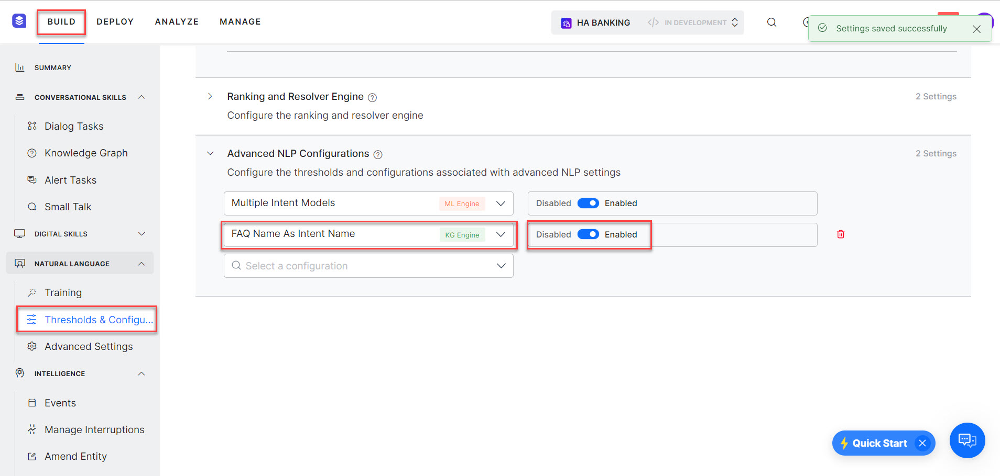

NLP Engine Tuning and Advanced Configurations¶
You can fine-tune intent detection for each language enabled for your Virtual Assistant (VA). To perform this action, follow the below steps:
- On the left pane, click Natural Language > Training > Thresholds & Configurations.
- Under the Thresholds & Configurations section, you can perform by customizing
- The Fundamental Meaning model – Learn more.
- Machine Learning model – Learn more.
- Knowledge Graph – Learn more.
- Ranking & Resolver engine – Learn more.
Apart from these, under the Advanced NLP Configurations section, there are advanced settings that you can use for specific use cases and requirements.
Warning
The default settings for these configurations are ideal for most use cases. Do not change these settings unless you are fully acquainted with the functionality you are setting, as they might have a detrimental effect on the VA's performance if not done properly.
{kind=link}
The following table gives the details of the various configurations that can be set from this section. Apart from these you can add Custom configurations, reach out to our support team to know how.
| CONFIGURATION | DESCRIPTION | AFFECTED NLP ENGINE | VALID INPUTS | NOTES |
| Split Compound | The setting
enables the splitting of the compound words into multiple stems and then processing the individual stem. |
ML | Enable,¶
Disable (default) |
Supported only for assistants in the
German language |
| None Intent | Once enabled, a dummy, placeholder intent is created which reduces the chances of getting a false positive for an intent match using the ML engine. | ML | Enable (default),
Disable |
|
| Epochs | Number iterations for training the neural network. | ML | Between 20 and 300,
increments of 10 (default setting 20) |
Valid only when Network Type is set to MLP-BOW,
MLP-WordEmbeddings, LSTM, CNN |
| Batch Size | Number of training samples used for each batch while training | ML | Between 10 and 30,
increments of 5 (default setting 10) |
Valid only when Network Type is set to MLP-BOW,
MLP-WordEmbeddings, LSTM, CNN |
| Learning rate | A hyper-parameter to control how much the weights of the network are adjusted with respect to the loss gradient | ML | Between 1e-4 and 1e-3,
increments of 1e-2 (default setting 1.00E-03) |
Valid only when Network Type is set to MLP-BOW,
MLP-WordEmbeddings, LSTM, CNN |
| Dropout | Regularization parameter to avoid overfitting of the model | ML | Between 0 and 0.8,
increments of 0.1 (default setting 0) |
Valid only when Network Type is set to MLP-BOW,
MLP-WordEmbeddings, LSTM, CNN |
| Vectorizer | Feature extraction technique on training data | ML | count (default),
tfidf |
Valid only when Network Type is set to MLP-BOW |
| Maximum sequence length | Length of the training sample or user input | ML | Between 10 and 30,
increments of 5 (default setting 20) |
Valid only when Network Type is set to MLP-WordEmbeddings,
LSTM, CNN |
| Embeddings Type | Feature extraction technique on training data | ML | generated,
random (default) |
Valid only when Network Type is set to MLP-WordEmbeddings,
LSTM, CNN |
| Embeddings Dimensions | Embeddings Dimensions to be used in featurization | ML | Between 100 and 400,
increments of 50 (default setting 300) |
Valid only when Network Type is set to MLP-WordEmbeddings,
LSTM, CNN |
| K Fold | kfold parameter for Cross-validation | ML | Between 2 and 10,
increments of 1 (default setting 2) |
|
| Fuzzy Match | This setting enables the use of the fuzzy matching algorithm for intent identification | ML | Enable (default),
Disable |
|
| Handle Negation | This setting enables the handling of negated words in intent identification | ML | Enable (default),
Disable |
|
| Ignore Multiple Occurences | Once enabled, the frequency of the words are disregarded for vectorization | ML | Enable (default),
Disable |
Valid only when Network Type is set to MLP-BOW |
| Entity Placeholders in User Utterances | Enable to replace entities present in user utterances with corresponding placeholders | ML | Enable (default),
Disable |
Valid only when Network Type is set to MLP-BOW |
| Sentence Split | Split the sentences in user utterance and perform intent detection using the complete user input | ML | Enable (default),
Disable |
|
| Multiple Intent Models | Enable separate ML models for each of the primary intents constituting all its sub-intents | ML | Enable,
Disable (default) |
|
| Lemmatize KG | Enable to use
the lemmatized versions of KG Synonyms to detect intents. |
KG | Enable
(default), Disable. |
|
| Use only Tagged Utterances for NER Training | Uses only the Tagged Utterances for Named Entity Recognition (NER) Training. When enabled, the ML Engine uses the utterances with one or more NER tags, to train the NER model for entity detection. | ML | Enable (default), Disable | |
| Neurons in Hidden Layer | Used to configure the number of Neurons used in the Hidden Layer | ML | Range – 0 to 1000 | Applicable only for Standard Network Type |
| Softmax Temperature | Use to define how confidently the ML Engine should identify the winning intent from the ML Model. Temperature is a hyperparameter that is applied to logits(Model outputs) to affect the final probabilities from the softmax. | ML | Range 0 to 100 | Any Network Type, except Standard Network |
| Spell Correction for ML | Enable to support spell correction on the ML bot dictionary while predicting. | Custom (ML) | Enable,
Disable (default) |
Applicable only for English language VAs. |
| Intent Elimination Rules | Enable to apply prebuilt rules to eliminate intent matches. | RR | Enable (default),
Disable |
Applicable only for English, Spanish, French, and German language VAs. |
| Cosine similarity dampening | Avoid penalty on short length questions using Cosine Similarity Dampening | KG | Enable (default),
Disable |
|
| FAQ Name as Intent Name | To use the Primary Question of the FAQ as the intent name even when the FAQ is linked to a Dialog | KG | Enable,
Disable (default) |
|
| FAQs Order for Disambiguation | Configure the order in which the FAQs are to be presented for resolving the ambiguity | KG | Order by Hierarchy,
Default Order (default) |
|
| Auto qualify FAQs from fully matched Paths | Automatically qualify all FAQs from the path if the path is fully matched even if no question from that path has matched the user query. | KG | Enable,
Disable (default) |
|
| Taxonomy based KG | Enable this option if only a full match of all the terms in the path should be considered as a path qualification. | Custom
(KG) |
Enable,
Disable (default) |
|
| Default Max. Wildcards for Intent Patterns | Use this option to define the maximum number of wildcards to be allowed by default between words for intent patterns. This does not limit you from explicitly writing patterns containing more wildcards. | FM | any number from 0-9;
set to 3 by default |
|
| Default Max. Wildcards for Entity Patterns | Use this option to define the maximum number of wildcards to be allowed by default between words for entity patterns. This does not limit you from explicitly writing patterns containing more wildcards. | FM | any number from 0-5;
set to 2 by default |
|
| Matching Order of Intent Patterns | Choose whether to pick the first pattern match of the intent (as per the order in which patterns are defined) or to go through all the patterns defined for the intent and find the best one. | FM | First (default),
Best |
|
| Grading of Pattern Matches | Choose whether the Pattern Matches should be classified as Probable matches, based on the number of wildcards present in the user input when compared to the pattern definition. | FM | any number from 0-9;
set to 3 by default |
|
| Precedence for Intents with Ambiguous Entities | Enable to Use Precedence, Intent Over Entity, or Entity Over Intent options for intents with ambiguous entities. | FM | Enable
Disable (default) |
|
| Prefer Only the First Pattern Match in a Sentence | Choose whether to prefer only the first pattern match from a sentence or to pick all the pattern matches in a sentence, when multiple patterns are matched in a single sentence | FM | Enable (default),
Disable |
|
| Exact Task Name Match | Choose whether the system should auto-generate the strict pattern when ‘Intent Detection using Task Name Words’ is Disabled. | FM | Enable (default),
Disable |
Machine Learning Engine Settings¶
Split Compound Words¶
Compound words are formed when two or more words are joined together to create a new word that has an entirely new meaning. This is particularly the case with the German language, where two (or more) words are combined to form a compound, leading to an infinite amount of new compounds. For example, the components are connected with a transitional element, as the -er in Bilder | buch (picture book); or parts of the modifier can be deleted. For example, Kirch | turm (church tower), where the final -e of the lemma Kirche is deleted. Often the compound words mean something entirely different from the stem words. For example, Grunder (founder) with stem words grun | der (green|the).
From an NLP perspective, it's crucial to determine when NLP engines should break down compound words and process their constituent parts separately, as well as when the entire compound word should be analyzed.
This configuration is employed to specify how compound words should be handled. When activated, compound words in user utterances are divided into their stem words before being considered for intent detection.
None Intent¶
The Machine Learning (ML) engine is responsible for analyzing and assessing user inputs to construct and refine a model. The ML model's primary goal is to categorize user inputs into predefined intents for which it has been trained. Nonetheless, when confronted with out-of-context utterances, the ML system may erroneously attempt to associate them with the incorrect intent.
To address this issue, you can prevent misclassifications by activating the None Intent option in the Training > Thresholds & Configurations section for various languages. The None intent serves as a temporary category that safeguards against the ML model assigning untrained or ambiguous utterances to inappropriate intents. This safeguard is enabled by default for newly created virtual assistants.
For example, for an Airlines VA, an Intent “Book Flight Ticket” is mapped. If a customer requests to “Book a Movie Ticket” the ML tries to associate the closest intent “Book Flight Ticket” (wrong intent) as the successful intent and triggers it. This error can be eliminated by enabling the None intent.
Adding an extra None Intent ensures classifying random input to these intents in the VA. Once enabled, the ML Model is tuned to identify these none intents when a user utterance contains the words that are not used in the VA’s training. i.e., bot vocabulary. You can define the None Intent for the Linked Bots in a Universal Bot. For more information, see Creating a Universal Bot article.
Externalization of the ML Engine¶
In machine learning, a hyperparameter governs the learning process by controlling specific aspects of it.
Hyperparameters offer the means to further tailor the behavior of your Virtual Assistants (VAs). The following list outlines the machine learning configurations that are available for this customization.
Network Type¶
You can choose the Neural Network that you want to use. This setting is moved to the Machine Learning section post v8.1. Learn more.
Epochs¶
In terms of artificial neural networks, an Epoch signifies a complete cycle through the entire training dataset.
Achieving optimal performance on data that was not part of the training set typically requires multiple traversals of the training data. The quantity of epochs serves as a hyperparameter, determining the count of full passes made through the training dataset.
Batch Size¶
Batch size denotes the quantity of training examples employed in a single iteration. It plays a pivotal role in determining the precision of the error gradient estimate during the training of neural networks. The batch size is, in essence, a hyperparameter that governs the quantity of training samples to be processed before updating the internal parameters of the model.
Learning Rate¶
The Learning Rate is a configurational element within an optimization algorithm, and it assumes the role of setting the size of each step taken during each iteration as the algorithm converges towards the minimum of a loss function. Essentially, it acts as a parameter that regulates the adjustment of weights within a neural network in response to the loss.
Dropout¶
Dropout refers to the process of excluding units, encompassing both hidden and visible components within a neural network. In simpler terms, dropout entails neglecting a randomly chosen set of neurons during the training phase. This technique serves as a form of regularization aimed at safeguarding against the overfitting of data
Vectorizer¶
Vectorization is a way to optimize algorithms by using vector operations for computations instead of element-by-element operations. It is used to determine the feature extraction technique on training data. It can be set to one of the following:
- Count Vectorizer is used to convert the given text documents to a vector of term/token counts based on the frequency (count) of each word occurrence in the text. This is helpful when there are multiple texts, and each word in the text needs to be converted into vectors for use in further text analysis. It enables the pre-processing of text data prior to generating the vector representation.
- TFIDF Vectorizer is a statistical measure that evaluates how relevant a word is to a document in a collection of documents. This is done by multiplying two metrics: how many times a word appears in a document (Term Frequency TF), and the Inverse Document Frequency (IDF) of the word across a set of documents.
Maximum Sequence Length¶
When handling a sentence, for training or prediction purposes, the sequence length is defined as the count of words present within that sentence.
The Maximum Sequence Length parameter sets a limit on the maximum number of words considered during training. If the user's input or training phrase sentence exceeds this maximum sentence length, it is truncated to match this predefined length. Conversely, if it falls short of the maximum length, the sentence is padded with special tokens to reach the required limit.
Embeddings Type¶
A (word) embedding is a vector representation of a word or phrase in an input/training text. Words with similar meaning will have similar vector representations in n-dimensional space and the vector values are learned in a way that resembles a neural network.
Embeddings Type can be set to one of the following:
- Random (default setting): At first, all the words are assigned random embeddings, then the embeddings are optimized for the given training data while training.
- Generated: Word Embeddings are generated just before the training starts. Word2Vec model is used for generating word embeddings. These generated embeddings are used while training. These generated word embeddings are optimized for the given training data while training.
Embeddings Dimensions¶
The embedding dimension defines the size of the embedding vector. If the word embeddings are random or generated, any number can be used as an embedding dimension.
K Fold Cross-Validation¶
Cross-validation is a resampling technique employed to assess the performance of machine learning models when working with a restricted data sample. This process involves a key parameter known as "k," which signifies the number of partitions into which the data sample is divided. This configuration provides you with the capability to adjust and set the value of the parameter "k." Learn more for more on cross-validation.
Fuzzy Match¶
Fuzzy matching is a method for approximate string matching that aids the system in recognizing matches that aren't exact. The ML Engine leverages fuzzy matching logic to identify precise matches.
This technique assigns a Fuzzy Search Score to intents based on their similarity to the user's input. Any intent scoring 95 or higher on the Fuzzy Search scale (ranging from 0 to 100) is identified as a definitive match.
Nonetheless, fuzzy matching may generate false positives when dealing with words that have similar spellings but distinct meanings. For instance, words like "possible" and "impossible," or "available" and "unavailable." This behavior can be problematic in certain scenarios. You have the option to deactivate this feature, preventing the ML engine from employing this matching algorithm.
Negation Handling¶
This setting is configured to choose the ML engine’s behavior when negated words are present in the user utterance. When the Negation Handling configuration is enabled, the intent’s ML score would be penalized if there are any negated predilection words present in the user utterance.
Ignore Multiple Occurrences¶
Sometimes the intent identification gets skewed if multiple occurrences of the same word are present in the user utterance. When the Ignore Multiple Occurrences configuration is enabled, then multiple occurrences of the same word present in the user utterance are discarded. The repeated word is considered only once for the vectorization and the subsequent intent matching.
Entity Placeholders in User Utterances¶
Sometimes you want the system to replace the entity values present in the user utterance with entity placeholders so that the intent detection can be improved. Note that the entities that are not resolved by the NER model would not be used for replacement, so if you enable this option we strongly urge that you annotate all the training utterances. These entities are replaced in user utterance in End-user interactions, Batch testing, Utterance testing, Conversation testing.
Sentence Split¶
If the user input has multiple sentences, multiple intent calls are made, one for each sentence. This might not be an ideal situation in some cases. For example user utterance, I want to book tickets. Redirect me to Book My Show. will result in a 0.6 ML score for I want to book tickets and Redirect me to Book My Show and the total ML score of 0.6.
Disabling this configuration sends the original user input to ML for intent identification and results in a definite score like 0.99 for the above example.
Multiple Intent Model¶
Enabling this feature creates multiple ML intent models for your VA. All the Primary Dialog Intents will be part of the Bot Level Intent Model. Separate Dialog Level ML Models are created for each of the other Dialog Tasks and Sub Dialog Tasks, consisting of all the sub-intents used in the respective task definition. Learn more.
Lemmatization of KG Synonyms¶
Lemmatization, in the field of linguistics, involves the task of consolidating the various inflected forms of a word into a single unit, which is then represented by the word's lemma or dictionary form. The incorporation of Parts of Speech information from the user's utterance during the lemmatization process can enhance the accuracy of identifying a more precise FAQ.
For example,
Word: "Running"
Inflected Forms: "Runs," "Ran," "Running"
Lemma (Dictionary Form): "Run"
In lemmatization, all the inflected forms of the word "running" are reduced to the common lemma "run," which represents the base or dictionary form of the word. This process simplifies the analysis and understanding of the word's core meaning and aids in efficient text analysis.
Use only Tagged Utterances for NER Training¶
Enabling this flag allows only Tagged Utterances for NER Training and avoids training of utterances without NER tags. This is an accurate and time-saving approach. By default, this flag is enabled for all new VAs. If the flag is not set for a VA, then it is in the disabled state under the Advanced NLP Configurations.
Neurons in Hidden Layer¶
Neurons in Hidden Layer determine the intensity/rigor to be adopted while performing intent identification by the ML Model. A higher number of neurons increases the accuracy but would require a longer duration for completing the training. A lower number of neurons decreases the accuracy but would speed up the training time. By default, it is fixed as 1000. Ideally, it should be 1x times the number of intents in a VA and can go up to 2x for better accuracy. This is a general recommendation and would vary depending on the quality of the training
Softmax Temperature¶
Softmax temperature allows you to define how confidently the ML Engine should identify the winning intent from the ML Model. Temperature is a hyperparameter that is applied to logits (Model outputs) to affect the final probabilities from the softmax. Any value between 0 to 1 indicates that the ML Engine should identify the winning intent with lower confidence. 0 being very low confidence and 1 being regular confidence. Any value between 1 to 100 indicates that the ML Engine should associate a high amount of confidence for the winning intent. 1 being regular confidence and 100 being the higher confidence possible.
Spell Correction in ML¶
For VAs in the English language, spell correction does not happen on the ML bot dictionary. This might cause an issue for VAs that are heavily dependent on ML training. The issue can be rectified by enabling spell correction on the ML bot dictionary while predicting. This is achieved by adding custom config in NLP Advanced Settings.
This is a Custom configuration, to enable follow the steps below:
- Select Add Custom.
- Enter name as ML spell correction
- Enter the value as enabled or disabled.
Ranking and Resolver Engine Settings¶
Intent Elimination Rules¶
There are a few safeguard rules in the R&R engine that reject a possible ML match. For example, rejection of intent when the user input contains only a verb word. But chances are that you do not want the R&R engine to apply any elimination rules and present all the qualified/winning intents to the end-users for resolving any ambiguity. Disabling this setting gives you that flexibility and NOT eliminate the intents that match the rules like single verb match (ML & FM), an entity only match with CR sentence (ML), earlier pattern match (multi-sentence scenario) (FM), or earlier definitive match (multi-sentence scenario) (All).
Knowledge Graph Engine Settings¶
Cosine Similarity Dampening¶
FAQ identification is done based on word match. The problem with this approach is that a user utterance with fewer words than the corresponding trained utterance is scored poorly. This scoring causes failure in Intent Identification.
When the Cosine Similarity Dampening configuration is enabled, the user utterances that have fewer words than the trained utterances (i.e. Primary and Alternate Questions) results in a higher match score than when the configuration is disabled.
FAQ Name as Intent Name¶
This option controls whether you see the Primary Question or Dialog Task name in the following scenarios:
- Where intent names are present to the user
- Disambiguation flow
- Follow-ups
- Utterance testing
-
Batch testing In this testing, when you enable the FAQ Name as Intent Name setting and then export the batch test suite results, the MatchedIntent field shows the FAQ name. If it is disabled, the Intent name is displayed instead of FAQ name. 
-
NLP Analysis
- Analytics (Dashboards, Custom Dashboards, Conversation Flows, and Metrics)
- Intent detection – ranking flows
{kind=link}
FAQs Order¶
When a user asks a query in case of ambiguity, the FAQs are presented to the user to disambiguate in random order. But you might want to provide a better experience for the end-user by presenting the questions in the order based on where they appear in the KG i.e. start with generic ones and then followed by more specific ones. You can use this option “FAQs Order for Disambiguation” for just that purpose. By setting this option to Order by Hierarchy, the FAQs at the parent level will be presented first, followed by the FAQs added to the immediate next level and so on and this order will be honored by the R&R Engine as well.
Auto-Qualify FAQs¶
When a user query matches a specific path in KG but does not match with any of the questions added to that path, you can choose to present the questions in the matched path to the user as ambiguous. If the matched path contains only one FAQ, then it would be considered as the ‘winning’ FAQ. Note that the root term match will not be considered.
Taxonomy based KG¶
The Knowledge Graph model works on a two-step model i.e. path qualification and followed by question matching. By default, the path need not be fully qualified at all times. Even a partial path match (above a threshold) is considered as a qualification and the questions in these paths are used for matching the user input.
In the ‘taxonomy’ based approach, the ‘path’ should fully match at all times. This is to cater to situations where every term in the path is equally important and only a full match of all the terms in the path should be considered as a qualification. Once a path is qualified, the questions in that path or paths should be considered for intent identification against user input.
This is a Custom configuration, to enable follow these steps:
- Click Add Custom.
- Enter name as KG taxonomy based.
-
Enter the value as Enable.
Note
Enabling this setting would add the following configurations for Term settings – Term Display Name, Auto Qualify Path, and the following configurations would not be available – Path Coverage and Minimum and Definitive Level for Knowledge Tasks. Learn more.
Fundamental Meaning Engine Settings¶
Default Maximum Wildcards for Intent Patterns¶
Define the maximum number of wildcards to be allowed in intent patterns by default. FM Engine will match intent patterns only if the user input has a maximum of X wildcards between the words used in the pattern definition. Any utterance with more X wildcards will not be qualified as an intent pattern match. For example, if the value is set as 4, then the ‘Book Ticket to ’ pattern will match with ‘_Book a direct oneway flight ticket to Chicago’. This will have no impact when you explicitly write an entity pattern containing a higher number of wildcards (for example, _~Y)
Maximum Allowed Wildcards in Entity Patterns¶
Define the maximum number of wildcards to be allowed in entity patterns by default. FM Engine will match entity patterns only if the user input has a maximum of X wildcards between the words used in the pattern definition. Any utterance with more X wildcards will not be qualified as an entity pattern match. For example, if the value is set as 4, then the ‘Book Ticket to ’ pattern will match with ‘_Book a direct oneway flight ticket to Chicago’. This will have no impact when you explicitly write an entity pattern containing a higher number of wildcards (for example, _~Y)
Intent Pattern Matching Order¶
Define whether to choose the first pattern match or to evaluate all the patterns and choose the best. “First” means to consider the first intent pattern match found for an intent, “Best” means to process all of the intent’s patterns and use the best scoring one. Note that FM scope is used for determining the best match, the R&R score is used for identifying the ‘best pattern’. It may be difficult to determine the best order for intent patterns, so allowing the platform to find the best is often helpful.
Grading of Pattern Matches¶
By default, all pattern matches are Definitive Matches. However, it might be helpful to mark pattern matches as Probable matches if they contain too many wildcards. Choose the threshold number of wildcards to be present in user input to consider a pattern match as a probable match. If the user input contains more wildcards (> = X) than the threshold, then those pattern matches will be classified as Probable matches. Pattern matches within the threshold limit (< X ) will continue to be treated as Definite Matches.
Precedence for Intents with Ambiguous Entities¶
The Precedence for Intents with Ambiguous Entities configuration setting allows bot designers to control an entity prompt at a general level whether the response processing at an entity should favor entities or intents when, and only when, the entity value is ambiguous.
Bot designers can customize the flow on how the bot should respond when a user input results in an ambiguous entity with an intent by choosing the following options:
- Use Precedence – Uses the Instance Properties setting specific to each entity, rather than global EoI/IoE settings. Applies to all Entity types except String and Description nodes. Learn more.
-
Intent over Entity– Terminates the ongoing intent automatically by initiating a new dialog task. For example: If a customer intends to place an order and during the interaction changes their intent and requests to edit the order, the system terminates the ongoing intent (place order) and initiates a new intent (edit order).
Note
The Intent over Entity option implies that you think the customer is generally going to say something different other than answer the prompt. The list of item entity type includes a phrase for ignoring the entity with ambiguity and proceeding with the intent instead.
-
Entity over Intent– Completes the ongoing dialog task normally once the user resolves the ambiguity in the intent. This option considers the customer input as an entity value, and allows the dialog task to progress to the next node. For example: If a customer intends to place an order and during the interaction changes their intent and requests to edit the order, the system continues with the ongoing intent to place the order.
When the user’s input for an entity consists of a valid value for the entity and another intent, you can control the experience by choosing between Intent Over Entity or Entity Over Intent options. Learn more.
Prefer Only the First Pattern Match in a Sentence¶
When multiple patterns are identified in a sentence, define whether the FM Engine should consider only the first pattern match or all the pattern matches. If enabled, the FM Engine will only use the first pattern match and discards all other pattern matches. If disabled, then the FM Engine will qualify all the pattern matches from the sentence, and they will be considered for disambiguation.
Exact Task Name Match¶
The FM Engine configuration Intent Detection using Task Name Words (see here for details) allows you to choose whether to match a task by using the words present in the task name. It is advised that this configuration be disabled if it conflicts with other training.
When disabled, the platform generates a strict pattern that does ‘exact matching’ i.e. if the user input exactly matches with the task name then it will consider as a match. The Exact Task Name Match configuration allows you to choose whether the platform should auto-generate the strict pattern when ‘Intent Detection using Task Name Words’ is Disabled.